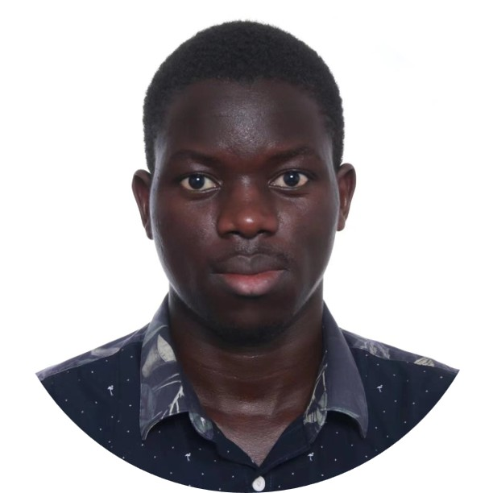
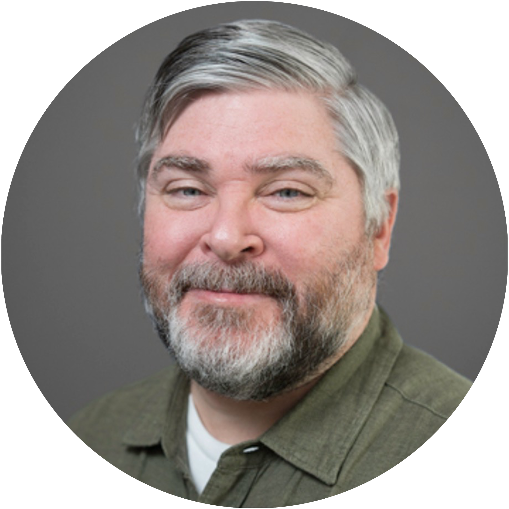

Our Team
Our team advances human-machine collaboration in infrastructure systems.
Ph.D. Students

Ava Jahan Biglari
Ava is a Ph.D. candidate at Carnegie Mellon University, where she also earned her M.Sc. in Civil and Environmental Engineering. She holds a B.Sc. in Civil Engineering from the University of Tehran. Her research focuses on enhancing the safety and efficiency of heavy-duty vehicle fleets through digital twins, physics-informed machine learning, and human-AI collaboration.

Seongeun Park
Seongeun is a Ph.D. student studying how to design infrastructure systems that support effective collaboration between humans and AI. She uses graph-based analysis to examine how procedural representation and structural complexity influence decision-making in safety-critical environments and explores approaches that embed operability into the design process from the outset.

Joonsun Hwang
Joonsun is a Ph.D. student researching human-AI collaboration in manufacturing and civil infrastructure. His work focuses on capturing and transferring human operators’ tacit knowledge using reinforcement learning, enabling AI systems to support both expert and novice workers during complex adjustment tasks. He holds a Bachelor of Architecture from Seoul National University.
Tek Narayan Bhattarai
Tek is a Ph.D. student at Carnegie Mellon University. His interests lie in using modeling, remote sensing, and AI tools to make infrastructure and communities adaptive and resilient to hydro-climatic extremes like floods under a changing climate. He holds an MSc in Water Science and Engineering from the IHE Delft Institute for Water Education, specializing in flood risk management, and a Bachelor's in Civil Engineering from the Institute of Engineering, Pulchowk Campus, Nepal.

Abias Nabimanya
Abias is a PhD student at Carnegie Mellon University. His research focuses on the use of emerging technologies, including digital twins and artificial intelligence, to enhance the intelligence, sustainability, and resilience of civil infrastructure. He holds a Master of Engineering from Tongji University and a Bachelor’s degree from Harbin Engineering University.

Damon Weiss
Damon is a professor of practice in Civil and Environmental Engineering at Carnegie Mellon University and a co-founder of Ethos Collaborative. His work integrates digital twins, AI, and geospatial analytics to support sustainable and resilient infrastructure. He holds an M.S. in Advanced Infrastructure Systems from Carnegie Mellon and a B.S. in Civil Engineering from the University of Virginia.
Weihao Sun
Weihao is a Ph.D. student at Carnegie Mellon University. His research focuses on human-AI collaboration in construction education and management, integrating digital twins and generative AI to support personalized workforce training in highway construction and improve communications and efficiency within the project. He holds an MSc in Management Science and Engineering from Southeast University, China, and Bachelor's degrees in Construction Management from Northeast Forestry University, China, and Aston University, United Kingdom.
Keyi Liu
Keyi is a Ph.D. student in Civil and Environmental Engineering at Carnegie Mellon University. Her research focuses on human-environment interactions, geospatial AI, infrastructure resilience, and generative AI in the architecture, engineering, and construction domain. She is particularly interested in integrating agent-based modeling, behavioral simulation, and data-driven methods to understand human responses to environmental risks, improve transportation safety and spatial equity, and support resilient infrastructure planning and management. She holds a Master of Landscape Architecture from Peking University, China, and a Bachelor’s degree in Urban and Rural Planning from Hunan University, China.